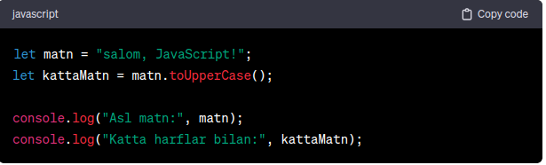
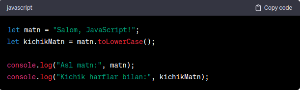

1.JavaScript Stringning length Xususiyati
JavaScriptda, matnni ifodalovchi qatorlarda yoki biror
o'zgaruvchida saqlab, shu matnning uzunligini aniqlash uchun
"length" xususiyati ishlatiladi. Bu xususiyat, matndagi belgilar
sonini ifodalovchi bir raqamni qaytaradi.
Yuoqorida
ko'rsatilgan misolda, "Salom, JavaScript!" matnining uzunligi 19
belgidir. "length" xususiyati, bir string obyektida
ishlatilganda, ushbu obyektning matni ichidagi belgilar sonini
aniqlashda foydalaniladi.
"length" xususiyati, JavaScript string obyektlarida matn
uzunligini ifodalaydi. Bu xususiyat, bir string obyektining
ichidagi belgilar sonini raqam ko'rinishida qaytaradi.
2.JavaScript Stringning toUpperCase Xususiyati
Yuqoridagi misolda, "salom, JavaScript!" matni bor. Keyin "toUpperCase" xususiyati orqali bu matn katta harflarga o'tkaziladi. Shunday qilib, "salom, JavaScript!" matni "SALOM, JAVASCRIPT!" ga o'tkaziladi.
3.JavaScript Stringning toLowerCase Xususiyati
Yuqoridagi misolda, "Salom, JavaScript!" matni bor. Keyin toLowerCase xususiyati orqali bu matn kichik harflarga o'tkaziladi. Shunday qilib, "Salom, JavaScript!" matni "salom, javascript!" ga o'tkaziladi.
4.JavaScript Stringning charAt Xususiyati
charAt xususiyati, string obyektlarida ishlatiladi va matn
ichidagi belgilar orqali berilgan indeksdagi harfin qiymatini
olishda foydalaniladi. Indeks 0 dan boshlanadi.
Yuqoridagi misolda, "Salom, JavaScript!" matni bor. charAt
xususiyati orqali bu matndagi birinchi harf (indeks 0 da)
olinadi. Shunday qilib, "Salom, JavaScript!" matnining birinchi
harfi "S" ga o'tadi.

5.JavaScript Stringning indexOf Xususiyati
indexOf xususiyati, string obyektlarida matndagi berilgan
submatnning birinchi indeksini topish uchun foydalaniladi. Agar
submatn matnda mavjud bo'lmasa, indexOf -1 ni qaytaradi.
Yuqoridagi misolda, "Salom, JavaScript!" matni bor. indexOf
xususiyati orqali bu matndagi "JavaScript" submatnning birinchi
indeksi olinadi. Shunday qilib, "Salom, JavaScript!" matni
ichida "JavaScript" submatni boshlang'ich indeksi 7 ga teng.

6.JavaScript Stringning substring Xususiyati
substring xususiyati, string obyektlarida berilgan start va end
indekslar orqali matndagi qismini olish uchun foydalaniladi.
start indeksi belgilangan oraliqda, end indeksi esa olish
kiritilgan indeksdan bitta avvalgina bo'ladi. Agar end indeksi
kiritilmagan bo'lsa, matnning oxirgi qismi olinadi.
Pastdagi misolda, "Salom, JavaScript!" matni bor. substring
xususiyati orqali bu matndagi 7-9 (end indeksi kiritilgani 10
bo'lmagani uchun) oraliqdagi belgilar olinadi. Shunday qilib,
"Salom, JavaScript!" matni ichidagi belgilar qisqacha matnda
"Java" bo'lib chiqadi.
matnni boshidan qirqib olish (0 dan
2 gacha .....)
7. JavaScript Stringning slice Xususiyat
slice xususiyati, string obyektlarida berilgan start va end
indekslar orqali matndagi qismini olish uchun foydalaniladi.
start indeksi belgilangan oraliqning boshlang'ich belgisini, end
indeksi esa shu oraliqning bir avvalgi belgisini ko'rsatadi.
Agar end indeksi kiritilmagan bo'lsa, matnning oxirgi qismi
olinadi.
Pastdagi misolda, "Salom, JavaScript!" matni bor. slice
xususiyati orqali bu matndagi 7-9 (end indeksi kiritilgani 10
bo'lmagani uchun) oraliqdagi belgilar olinadi. Shunday qilib,
"Salom, JavaScript!" matni ichidagi belgilar qisqacha matnda
"Java" bo'lib chiqadi.
matnni orqadan qirqib keladi. ()
8. JavaScript Stringning replace Xususiyati
replace xususiyati, string obyektlarida belgilangan matn qismini
boshqa matn bilan almashtirish uchun ishlatiladi. Bu xususiyat
yalpi o'zgaruvchilarni o'z ichiga oladi va yalpi qaytuvchi
sifatida yangi matnni qaytaradi.
Pastdagi misolda, "Salom, JavaScript!" matni bor. replace
xususiyati orqali bu matndagi "JavaScript" submatnni "Dunyo"
bilan almashtiramiz. Shunday qilib, "Salom, JavaScript!" matni
"Salom, Dunyo!" ga o'zgaradi.

9.JavaScript Stringning split Xususiyati
split xususiyati, string obyektlarida belgilangan separator
bo'yicha matnni bo'lib massivga ajratishda foydalaniladi. Ushbu
xususiyat orqali matnni separator bilan ajratgan bo'lib, bu
separatorlarni o'z ichiga olmayan massiv qaytariladi.
Pastdagi misolda, "Salom, JavaScript!" matni bor. split
xususiyati orqali bu matnni ", " separator bo'yicha ajratamiz.
Shunday qilib, "Salom, JavaScript!" matni ["Salom",
"JavaScript!"] massivga aylanadi.

10.JavaScript Stringning concat Xususiyati
concat xususiyati, bir nechta stringni bitta stringga qo'shish
uchun foydalaniladi. Ushbu xususiyat o'z ichiga olingan
stringlarni bir-biriga qo'shadi va yangi stringni qaytaradi.
Pastdagi misolda, "Salom, " va "JavaScript!" matnlari bor.
concat xususiyati orqali bu ikkala matnni qo'shishimiz
natijasida yangi bir matn hosil bo'ladi. Shunday qilib, yangi
matn "Salom, JavaScript!" ga o'zgaradi.

11.JavaScript Stringning match Xususiyati
match xususiyati, bir stringni berilgan regular ifoda (regexp)
boyicha qidirish uchun ishlatiladi. Bu xususiyat matn ichida
topilgan belgilar yoki qatorlarni ro'yxat shaklida qaytaradi.
Pastdagi misolda, match xususiyati orqali "havo" so'zi matn
ichida qidiriladi. Natijada topilgan "havo" so'zlarini tartib
bilan o'z ichiga olgan massiv qaytariladi. Shunday qilib, natija
["havo"] ga o'xshaydi.

12.JavaScript Stringning repeat Xususiyati
repeat xususiyati, bir matnni berilgan sanaga ko'p marta takrorlash uchun foydalaniladi. Bu xususiyat o'z ichiga olingan matnni berilgan sanaga qadar qaytaradi.

13.JavaScript Stringning replace Xususiyati
replace xususiyati, string obyektlarida belgilangan searchValue
ni qidirib topish va uning o'rniga replaceValue ni joylash uchun
foydalaniladi. Agar searchValue string bo'lsa, faqat birinchi
topilgan searchValue ni o'zgartiradi.
pastdagi misolda, "Salom, JavaScript!" matni bor. replace
xususiyati orqali bu matndagi "JavaScript" submatnni "Dunyo"
bilan almashtiramiz. Shunday qilib, "Salom, JavaScript!" matni
"Salom, Dunyo!" ga o'zgaradi.

14.JavaScript Stringning search Xususiyati
search xususiyati, string obyektlarida berilgan regular ifodani
(regexp) qidirib topish uchun foydalaniladi. Agar topilgan
bo'lsa, eng birinchi topilgan indeksni qaytaradi. Aks holda, -1
ni qaytaradi.
Pastdagi misolda, search xususiyati orqali "Java" so'zi matn
ichida qidiriladi. Agar topilgan bo'lsa, eng birinchi topilgan
indeksi qaytaradi. Shunday qilib, "Salom, JavaScript!" matni
ichida "Java" so'zi "7" indeksdan boshlanadi.

15.JavaScript Stringning trim Xususiyati
trim xususiyati, string obyektlaridagi matndagi bosh joylarni
olib tashlash uchun foydalaniladi. Bu xususiyat o'z ichiga olgan
matndan chap va o'ng tomondagi bo'sh joylarni olib tashlab,
yangi bir string qaytaradi.
pastdagi misolda, trim xususiyati orqali " Salom, JavaScript! "
matnidagi bosh joylar olib tashlanadi. Natijada yangi matn
"Salom, JavaScript!" ga o'zgaradi.

16.JavaScript Stringning padEnd Xususiyati
padEnd xususiyati, string obyektlaridagi matnni belgilangan
hajmga yettirish uchun belgilangan belgini matnning oxiriga
qo'shish uchun ishlatiladi. Agar matn belgilangan hajmga
yetmagan bo'lsa, belgilangan belgini matnning oxiriga takrorlash
mumkin.
Pastdagi misolda, padEnd xususiyati orqali "Salom" matni
belgilangan hajmga (10) yettiriladi va oxiriga "!"" belgisi
qo'shiladi. Natijada yangi matn "Salom!!!!!" ga o'zgaradi.

17.JavaScript Stringning padStart Xususiyati
padStart xususiyati, string obyektlaridagi matnni belgilangan
hajmga yettirish uchun belgilangan belgini matnning boshiga
qo'shish uchun foydalaniladi. Agar matn belgilangan hajmga
yetmagan bo'lsa, belgilangan belgini matnning boshiga takrorlash
mumkin.
Pastdagi misolda, padStart xususiyati orqali "Salom" matni
belgilangan hajmga (10) yettiriladi va boshiga "!"" belgisi
qo'shiladi. Natijada yangi matn "!!!!Salom" ga o'zgaradi.

18.JavaScript Stringning includes Xususiyati
includes xususiyati, string obyektlarida berilgan searchString ni qidirib topish uchun foydalaniladi. Agar searchString matnda topilsa, true qaytariladi; aks holda, false qaytariladi.

19.JavaScript Stringning endsWith Xususiyati
endsWith xususiyati, string obyektlaridagi matnning oxiriga
belgilangan searchString ni qidirib topish uchun foydalaniladi.
Agar matn belgilangan so'z bilan tugasa, true qaytariladi; aks
holda, false qaytariladi.
Pastdagi misolda, endsWith xususiyati orqali "Salom,
JavaScript!" matni ichida "JavaScript" so'zi oxirida turib,
natijada true qaytariladi.

20.JavaScript Stringning startsWith Xususiyati
startsWith xususiyati, string obyektlaridagi matnning boshiga
belgilangan searchString ni qidirib topish uchun foydalaniladi.
Agar matn belgilangan so'z bilan boshlanib bo'lsa, true
qaytariladi; aks holda, false qaytariladi.
Pastdagi misolda, startsWith xususiyati orqali "Salom,
JavaScript!" matni ichida "Salom" so'zi boshidan boshlanadi,
natijada true qaytariladi.

21.JavaScript Stringning localeCompare Xususiyati
localeCompare xususiyati, string obyektlaridagi matnni boshqa
bir matn bilan solishtirib, ularning alfabit tartibida
joylashganligini aniqlash uchun foydalaniladi. Agar birinchi
matn ikkinchi matndan oldin kelgan bo'lsa, -1 qaytariladi; agar
ikkala matn bir xil bo'lsa, 0 qaytariladi; aks holda, 1
qaytariladi.
Pastdagi misolda, localeCompare xususiyati orqali "apple" va
"banana" matnlari solishtiriladi. Natijada "apple" so'zi
"banana" so'zidan oldin kelganligi uchun -1 qaytariladi.

22.JavaScript Stringning toLocaleLowerCase Xususiyati
toLocaleLowerCase xususiyati, string obyektlaridagi matnni
lokalizatsiya bo'yicha kichik harflarga o'tkazish uchun
foydalaniladi. Lokalizatsiya maqsadida, har bir tillarning
xususiyatiga ko'ra harflarning katta va kichik variantlari
o'zgaradi.
Pastdagi misolda, toLocaleLowerCase xususiyati orqali "SALOM,
DUNYO!" matni lokalizatsiya bo'yicha kichik harflarga
o'tkaziladi. Natijada yangi matn "salom, dunyo!" ga o'zgaradi.

23. JavaScript Stringning toLocaleUpperCase Xususiyati
toLocaleUpperCase xususiyati, string obyektlaridagi matnni
lokalizatsiya bo'yicha katta harflarga o'tkazish uchun
foydalaniladi. Lokalizatsiya maqsadida, har bir tillarning
xususiyatiga ko'ra harflarning katta va kichik variantlari
o'zgaradi.
Pastdagi misolda, toLocaleUpperCase xususiyati orqali "salom,
dunyo!" matni lokalizatsiya bo'yicha katta harflarga
o'tkaziladi. Natijada yangi matn "SALOM, DUNYO!" ga o'zgaradi.

24.Medhod toString
toString JavaScriptning obyekt metodlari orasida umumiy va
umumiy ma'lumotlarni matnga o'tkazish uchun ishlatiladi. Bu
metod, bir obyektni matn ko'rinishiga o'tkazadi. String, array,
number, va boshqa obyektlar uchun ishlatiladi.
pastdagi misolda, toString metodini ishlatib, sonni matn
ko'rinishiga o'tkazdik. Natijada, "42" matni hosil bo'ldi.

Bu misolda, arrayni toString metodi orqali matn ko'rinishiga o'tkazdik va natijada "1,2,3" matni hosil bo'ldi.

25.JavaScript Stringning trimEnd (yoki trimRight) Xususiyati
trimEnd yoki trimRight xususiyati, string obyektlaridagi
matndagi oxirgi qismidagi bo'sh joylarni olib tashlash uchun
foydalaniladi.
pastdagi misolda, trimEnd (yoki trimRight) xususiyati orqali "
Salom, JavaScript! " matnidagi oxirgi qismidagi bo'sh joylar
olib tashlanadi. Natijada yangi matn " Salom, JavaScript!"
bo'lib chiqadi.

26.JavaScript Stringning trimStart (yoki trimLeft) Xususiyati
trimStart yoki trimLeft xususiyati, string obyektlaridagi
matndagi bosh qismidagi bo'sh joylarni olib tashlash uchun
foydalaniladi.
Pastdagi misolda, trimStart (yoki trimLeft) xususiyati orqali "
Salom, JavaScript! " matnidagi bosh qismidagi bo'sh joylar olib
tashlanadi. Natijada yangi matn "Salom, JavaScript! " bo'lib
chiqadi.

27.String valueOf
valueOf JavaScript obyektining asosiy qiymatini olish uchun
ishlatiladi. Bu metod obyektni asl qiymatini (primitive value)
qaytaradi. Agar obyektasining valueOf metodini o'zgartirib
bo'lsa, valueOf o'zgaruvchisi o'zgarib qoladi.
Pastdagi misolda, Number obyekti yaratilgan va uning valueOf
metodi chaqirilgan. Metod chaqirilganda, obyektning asl qiymati,
ya'ni o'zgarmagan qiymati qaytariladi.

2 chi misolda esa MyNumber nomli obyektni yaratib, uning prototipida valueOf metodini o'zgartirganmiz. Shu sababli, myNum obyekti qiymati chaqirilganda (valueOf metodi chaqirilganda) o'zgartirilgan qiymatni qaytaradi.

28 Input Search
Birinchi navbatda input search uchun input ochib olamiz html
faylimizga va undan keyin inputga id va oninput qo'shamiz unga
style hohlagandek qilib moslashtiramiz.
pastdagi rasmda ko'rishingiz mumkin.
Endi navbar script qo'shamiz
html faylimizga ulangan script faylimizni ochamiz hamda unga
kode yozishni boshlaymiz
1-qadam
Biz inputimizga search qilganimizda search qayerdan qay holatda
izlashi va uni topganda qanday namoyon bo'lishi haqida algoritm
tuzib chiqamiz. Keling algoritm tuzaylik unda shunday bo'lsin !
1.1 inputga search qilganda bizning html faylimizda mavjud qaysi